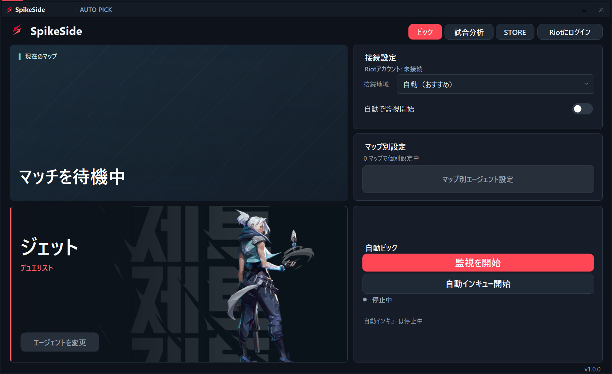

VALORANT 非公式コンパニオン ／ Windows x64
SpikeSide
エージェントの自動選択、試合の分析、ストアと武器カタログの確認ができる Windows 向けアプリです。

SpikeSide のアプリ画面
Features
主な機能
エージェント選択、試合の分析、スキンの確認などを一つのアプリから操作できます。
-
Auto Pick
エージェントの自動選択
「監視を開始」を押しておけば、エージェント選択画面に入ったタイミングで、あらかじめ決めたエージェントを選択します。マップごとに使うエージェントを分けて設定できます。
- 「自動で監視開始」をオンにすれば、開始操作も省略できます
- マップごとにエージェントを設定できます
-
Match Analysis
試合履歴と成績分析
Riot アカウントでログインすると、試合データを同期して「試合分析」画面で振り返れます。取得した試合履歴は、お使いの PC に保存されます。
- 試合データの同期には、実際の Riot アカウントでのログインが必要です
- 履歴の保存先はご自身の PC です
-
Store & Catalog
ストアと武器カタログ
今日のストアのラインナップに加え、武器カタログからスキンを名前・カテゴリー・武器で絞り込めます。カラーバリエーションやアップグレードレベルごとの見た目、ウィンドウいっぱいの拡大動画プレビューもその場で確認できます。
- 表示専用です。購入はゲーム内で行ってください
- 今日のストアの表示には Riot アカウントでのログインが必要です
-
Auto Queue
自動インキュー
試合終了後、選択中のキューへ自動で再参加します。
- マッチの自動承諾は行いません
- 自動インキューにはパーティーリーダーの権限が必要です
Screens
アプリの画面
掲載している画像は SpikeSide のアプリ画面です。画面上部のタブで「ピック」「試合分析」「STORE」を切り替えて使います。
ピック画面
- 現在のマップ
- マッチ中のマップと、選ぶ予定のエージェントを大きく表示します。
- 接続設定
- Riot アカウントの接続状態、接続地域、自動監視のオン・オフをまとめています。
- マップ別設定
- マップごとにエージェントを割り当てます。
- 自動ピック
- 「監視を開始」と「自動インキュー開始」をここから操作します。

STORE・武器カタログ
- 今日の STORE ／ 武器カタログ
- 今日のラインナップと、スキン全体のカタログを切り替えて表示します。
- 検索と絞り込み
- スキン名・武器名での検索に、カテゴリーと武器の絞り込みを組み合わせられます。
- プレビュー
- カラーバリエーション、アップグレードレベルごとの見た目、拡大対応の動画プレビューを確認できます。
- 表示専用
- 購入機能はありません。購入はゲーム内で行ってください。

Setup
使い方
ダウンロードから監視開始までの手順です。
-
手順 1
リリースページからダウンロード
GitHub の 最新リリースページを開き、Assets にある Windows x64 版の EXE をダウンロードします。
-
手順 2
Windows で起動
ダウンロードした EXE を起動します。対応しているのは Windows x64 です。
-
手順 3
Riot アカウントでログイン
画面右上の「Riotにログイン」から、普段お使いの Riot アカウントでログインします。ストアの表示と試合データの同期に必要です。
-
手順 4
エージェントを決めて、監視を開始
使いたいエージェントを選び、「監視を開始」を押します。あとはいつもどおり VALORANT でキューに入るだけです。
FAQ
よくある質問
Riot Games の公式アプリですか？
SpikeSide は、Riot Games が開発・運営する公式アプリではない、サードパーティ製のアプリです。
対応している環境は？
Windows x64 向けのアプリです。macOS やモバイル端末には対応していません。
Riot アカウントでのログインは必要ですか？
ストアの表示と試合データの同期には、実際の Riot アカウントでのログインが必要です。ログインはアプリ右上の「Riotにログイン」から行えます。
試合履歴はどこに保存されますか？
同期した試合履歴は、SpikeSide を使っている PC に保存されます。
自動インキューは、マッチも自動で承諾しますか？
いいえ。自動インキューは、選択しておいたキューへ再参加する機能です。マッチの自動承諾は行いません。
アプリからスキンを購入できますか？
できません。STORE と武器カタログは表示専用です。購入する場合はゲーム内で行ってください。
どこからダウンロードできますか？
GitHub の最新リリースページから入手できます。
Download
SpikeSide v1.1.2
GitHub Releases で公開しています。リリースページの Assets から Windows x64 版をダウンロードしてください。
- Windows x64
- GitHub Releases で配布